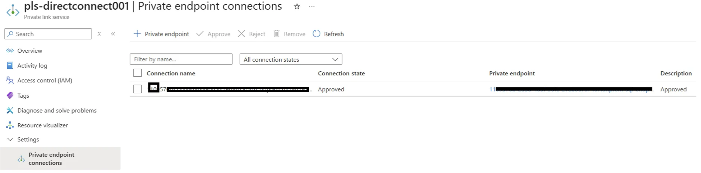
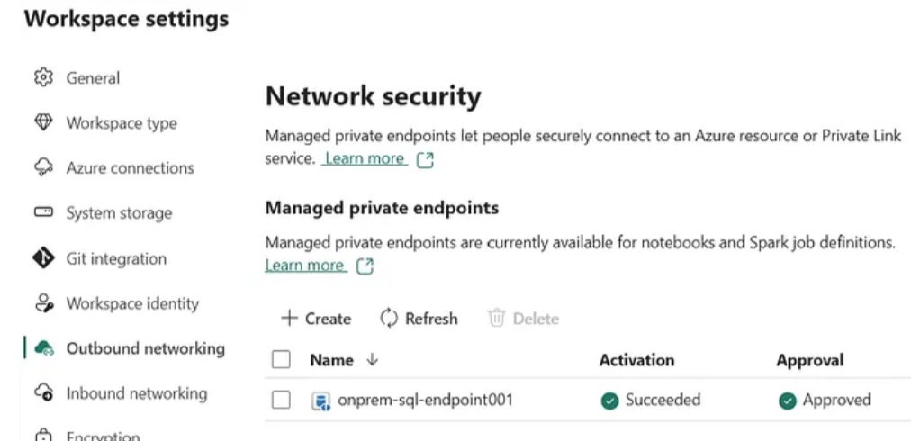
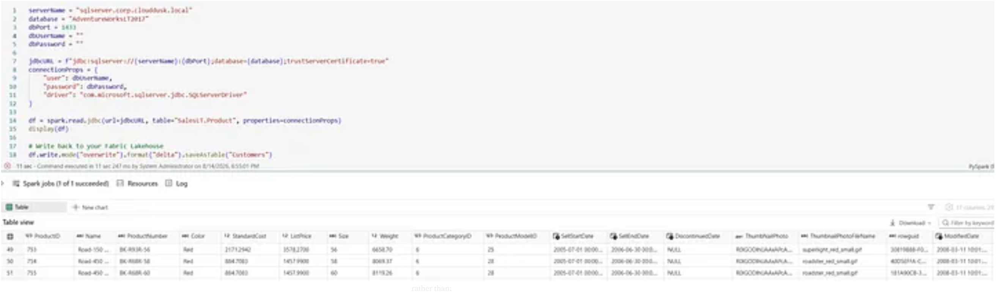

Connecting an On-Premises Data Source to Microsoft Fabric Using Private Link Service Direct Connect
Recently, I wanted to solve a simple problem:
How can I connect a Microsoft Fabric Notebook to an on-premises SQL Server securely, without exposing the SQL Server to the public internet?
I expected this to be mostly a JDBC configuration. It wasn’t. What started as a database connectivity task turned into a hands-on learning experience involving Microsoft Fabric, Azure Private Link, Private Link Service Direct Connect, DNS, networking, Linux, SQL Server, and PySpark JDBC.
The goal
The end goal was to keep the SQL Server private while allowing a Microsoft Fabric Notebook to read data through a private networking path only.
Microsoft Fabric Notebook → Managed Private Endpoint → Private Link Service Direct Connect → Private networking → VPN / ExpressRoute → On-Premises SQL Server
1. Understanding the architecture
At a high level, the path looked like this:
- Fabric Notebook reaches the Managed Private Endpoint.
- The Managed Private Endpoint connects to an Azure Private Link Service.
- The Private Link Service provides the private connection toward the destination.
- The Azure environment must also have private connectivity to the on-prem network via VPN or ExpressRoute.
The important part is that the network path needs to work end-to-end. If DNS or routing fails, the rest of the configuration is meaningless.
2. Private Link Service Direct Connect
While researching the architecture, I came across Private Link Service Direct Connect, which is currently a public preview capability. This was particularly interesting because the traditional pattern often needs an Internal Load Balancer and forwarding VM in Azure.
With Direct Connect, the architecture can be simplified for suitable scenarios where the destination has a static private IP.
Traditional: Fabric → PLS → Load Balancer → Forwarding VM → On-Prem SQL Direct Connect: Fabric → PLS → Direct Connect → Private network → On-Prem SQL
3. Enabling the Azure feature
One of the prerequisites I hit was the Azure feature flag:
Microsoft.Network/AllowPrivateLinkserviceUDR
I registered it using Azure CLI:
az feature register \ --namespace Microsoft.Network \ --name AllowPrivateLinkserviceUDR az feature show \ --namespace Microsoft.Network \ --name AllowPrivateLinkserviceUDR \ --query "properties.state" \ -o tsv
It eventually showed:
Registered
4. Test the network before troubleshooting Fabric
Don’t start with Fabric. Start with the network.
Before touching JDBC or Fabric, I validated connectivity from an Azure Ubuntu VM to the SQL Server using TCP.
nc -vz <SQL_SERVER_IP> 1433 # or telnet <SQL_SERVER_IP> 1433
If that fails, there is no point debugging Fabric. The problem is usually in Azure networking, routing, firewalls, or the on-prem network.
5. DNS matters
I also wanted to use a hostname instead of a raw IP:
sqlserver.corp.clouddusk.local
From Ubuntu, I tested DNS resolution with:
getent hosts sqlserver.corp.clouddusk.local # or nslookup sqlserver.corp.clouddusk.local
For temporary validation, an /etc/hosts entry is useful, but it only affects the local machine. Microsoft Fabric still needs proper DNS design for the overall private path.
6. Creating the Fabric Managed Private Endpoint
I used the Fabric REST API to create the endpoint:
POST https://api.fabric.microsoft.com/v1/workspaces/{workspaceId}/managedPrivateEndpoints
The payload looked like this:
{
"name": "onprem-sql-endpoint",
"targetPrivateLinkResourceId": "",
"targetFQDNs": ["sqlserver.corp.clouddusk.local"],
"requestMessage": "Private connection request from Fabric to on-premises SQL"
}
I tested the REST API with Hoppscotch, which made it simple to validate the request directly in the browser.
7. One useful error I hit
I initially tried to include:
"targetSubresourceType": "sql"
The API returned:
InvalidTargetSubResourceType
That was a good reminder to avoid guessing values. In this scenario, removing the unnecessary property allowed the endpoint to provision successfully.
8. Approval from Azure
Once the Fabric endpoint was created, the request appeared in the Azure Private Link Service. From the Azure portal, I approved the connection from:
Private Link Service → pls-directconnect001 → Settings → Private endpoint connections
After approval, the connection state showed as approved and the Managed Private Endpoint became usable.

Azure Portal: Private endpoint connections showing the approved connection
9. Verify the Managed Private Endpoint
After creating the endpoint, I verified it from the Fabric workspace to ensure the activation and approval were successful:
Workspace → Workspace settings → Network security → Managed private endpoints
The endpoint showed:
- ✅ Activation: Succeeded
- ✅ Approval: Approved

Fabric Workspace: Managed private endpoints verification showing successful activation and approval
10. Testing SQL Server from Ubuntu
Once the network path was valid, I installed sqlcmd to verify the database connectivity in a more realistic way than a simple TCP check.
sqlcmd \ -S sqlserver.corp.clouddusk.local,1433 \ -U <SQL_USER> \ -P '<SQL_PASSWORD>'
Once connected, I could run:
SELECT @@SERVERNAME;GO
11. Connecting from the Fabric Notebook
Once the network was valid, the JDBC connection itself was straightforward:

Fabric Notebook: JDBC connection code and Spark DataFrame query
serverName = "sqlserver.corp.clouddusk.local"
database = "AdventureWorksLT2017"
dbPort = 1433
jdbcURL = (
f"jdbc:sqlserver://{serverName}:{dbPort};"
f"databaseName={database};"
"encrypt=true;"
"trustServerCertificate=true"
)
connectionProps = {
"user": "",
"password": "",
"driver": "com.microsoft.sqlserver.jdbc.SQLServerDriver"
}
Then I could read data from the table:
df = spark.read.jdbc(
url=jdbcURL,
table="SalesLT.Customer",
properties=connectionProps
)
display(df)
12. A database error that was not networking
At one point I got:
SQLServerException: Invalid object name 'dbo.Customers'
This looked like a networking problem, but it wasn’t. JDBC had already reached the SQL Server. The issue was simply that I used the wrong table name.
The AdventureWorksLT database uses:
SalesLT.Customer
So changing the table to:
table="SalesLT.Customer"
resolved the issue.
Once JDBC successfully reaches SQL Server, stop troubleshooting the Azure network. Start looking at the database, schema, table, authentication, and permissions.
13. Writing data into the Fabric Lakehouse
After the data was successfully loaded into Spark, I could write it into the Fabric Lakehouse as a Delta table.
df.write \
.mode("overwrite") \
.format("delta") \
.saveAsTable("Customers")
14. My troubleshooting checklist
- DNS: test hostname resolution
- TCP: verify port 1433 connectivity
- SQL Server: test sqlcmd access
- Private Link: confirm endpoint is provisioned and approved
- JDBC: validate the connection and table query
- Database: check schema, table, and permissions
The main lesson is that cloud networking is layered. DNS, TCP, network path, Private Link, JDBC, and the database are all separate layers with different failure modes.
Final thoughts
What started as “I just need Fabric to read a SQL Server table” turned into a useful lesson in private cloud networking.
Once the network path was working, the actual data-access code was the easy part. The real value was understanding the path that the data takes before JDBC ever gets a chance to run.
That’s the kind of work I like to document here: practical Azure and data-platform problems, solved with real-world networking and implementation experience.